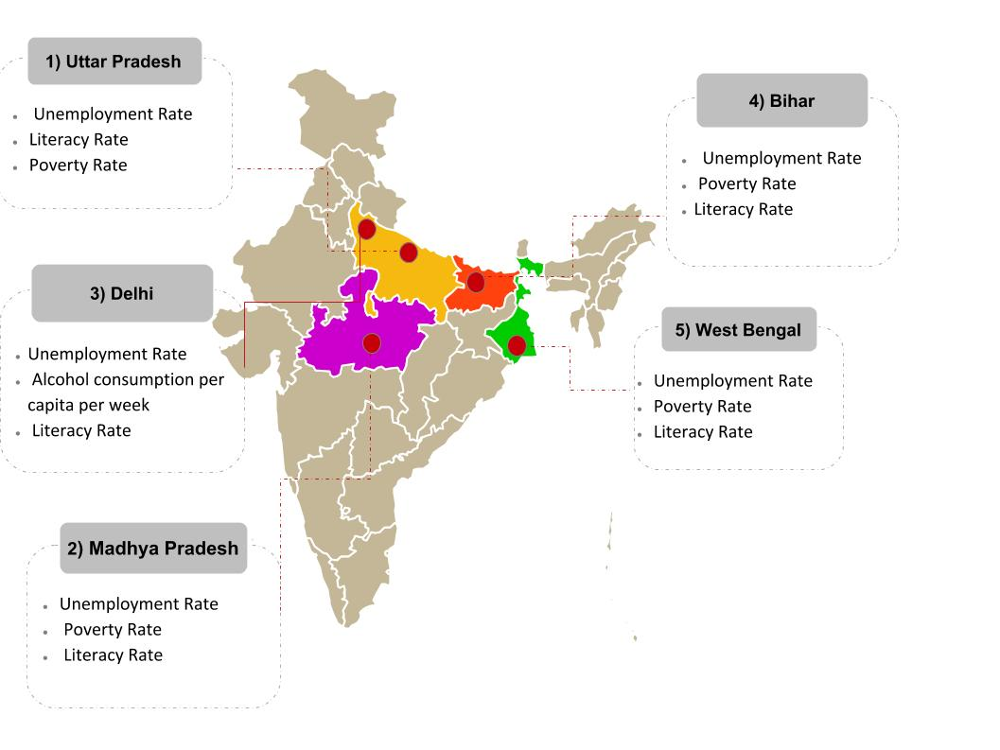

| MAP SHOWING HIGH DENSITY ZONES IN INDIA FOR KIDNAPPING CASES | LIST OF STATES ACCORDING TO KIDNAPPINGS CASES REGISTERED IN 2014 | ||
|  | 1> Uttar Pradesh 16.00 % | 2> Madhya Pradesh 10.14 % | 3> Delhi UT 9.25 % |
| 4> Bihar 8.51 % | 5> West Bengal 7.91 % | 6> Rajasthan 7.34 % | |
| 7> Assam 6.24 % | 8> Maharashtra 4.91 % | 9> Haryana 3.99 % | |
| 10> Odisha 3.98 % | 11> Gujarat 3.52 % | 12> Chhattisgarh 2.61 % | |
| 13> Karnataka 2.50 % | 14> Tamil Nadu 2.26 % | 15> Punjab 2.01 % | |
| 16> Jharkhand 1.84 % | 17> Telangana 1.49 % | 18> Andhra Pradesh 1.38 % | |
| 19> Jammu & Kashmir 1.11 % | 20> Uttarakhand 0.89 % | 21> Himachal Pradesh 0.39 % | |
| 22> Kerala 0.29 % | 23> Chandigarh 0.24 % | 24> Manipur 0.24 % | |
| 25> Meghalaya 0.23 % | 26> Goa 0.20 % | 27> Arunachal Pradesh 0.19 % | |
| 28> Tripura 0.16 % | 29> Nagaland 0.05 % | 30> A & N Islands 0.03 % | |
| 31> Sikkim 0.03 % | 32> D&N Haveli 0.02 % | 33> Puducherry 0.02 % | |
| 34> Daman & Diu 0.01 % | 35> Mizoram 0.01 % | 36> Lakshadweep 0.00 % | |